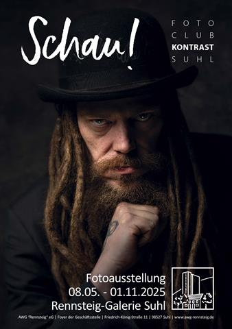
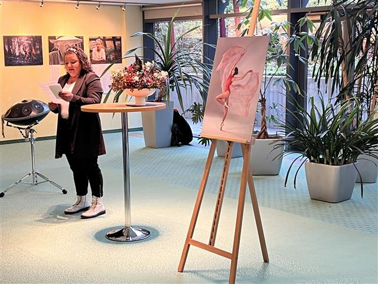
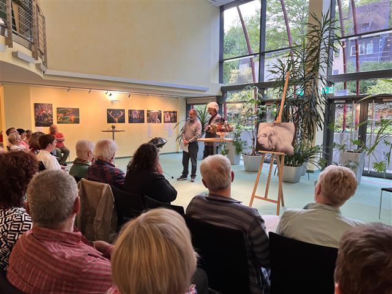
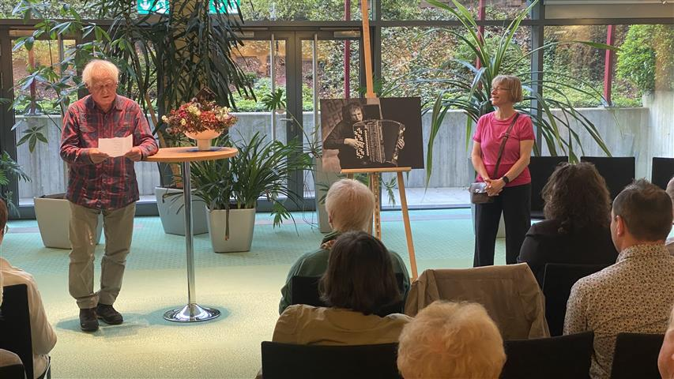

Suhl. Eine fulminante Ausstellungseröffnung konnten alle Teilnehmer und Gäste am Donnerstag, dem 8. Mai 2025, ab 19 Uhr in der Rennsteig-Galerie in der Geschäftsstelle der AWG in Suhl, Friedrich-König-Str. 11 erleben. Unter dem Titel „Schau!" präsentieren Mitglieder des Fotoclubs Kontrast Suhl dort bis Ende Oktober eine Auswahl ihrer besten Fotos.
Zum Eröffnungsabend gab es dazu live vorgetragen von den Autorinnen und Autoren frische Südthüringer Texte, die eigens zu den Bildern entstanden waren. Mit dieser Gemeinschaftsaktion setzt der Südthüringer Literaturverein eine inzwischen jahrzehntelange fruchtbare Zusammenarbeit mit dem Fotoclub auf besondere Weise fort. Die Idee der Veranstalter war es, statt einer Laudatio mit „kulturwissenschaftlichen Ausführungen" Südthüringer Dichter zu Wort kommen zu lassen. Die Bilder von 18 Fotoclub-Kontrast-Mitgliedern traten dabei mit poetischen Werken von 9 regionalen Autorinnen und Autoren ins Verhältnis. Vom Literaturverein beteiligt waren Ulrike Blechschmidt, Heidi Büttner, Harald Lindig, Dietmar Hörnig, Iris Friebel, Manuela Ploch, Kerstin Göcking-Reichenbach, Theresa Werner und natürlich Vereinschef Holger Uske.
Das künstlerische Gemeinschaftswerk wurde zur Ausstellungseröffnung noch durch musikalische Klangwelten von Jan Eppler auf der Handpan bereichert.
Wer die Vernissage verpasst haben sollte, kann dennoch die entstandenen Texte im Zusammenhang mit den Fotoaufnahmen noch genießen, denn sie wurden gekonnt unter den jeweiligen Fotos angebracht.



